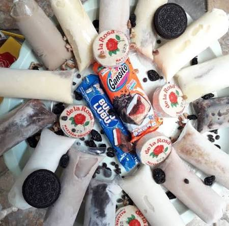

Centro de zapotiltic ,(fiestas del rincon ahora)
Telefono 341-239-76-75
nosotros somos un equipo conformada por la familia y entre todos una mañana hace mas de 5 años jpasando por una gran crisis economica el jefe de familia desidio salir a trabajar ebnb la corta y venta de aguacates porloque noto la gran sequia que existia ellos se ivan a lugares deserticos ya que se iban para el monte en tonces en medio de la crisis economica se nos ocurrio para las personas querian algo refrescante como un bolis
